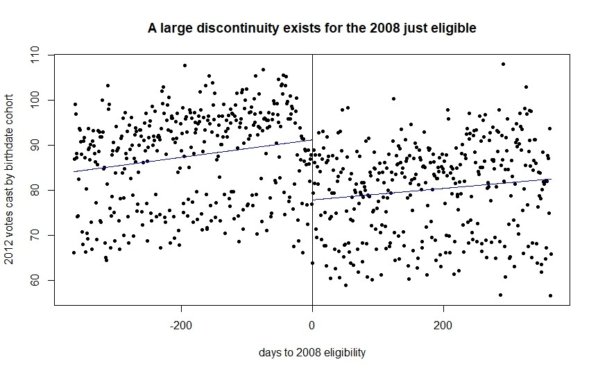

This post walks through my replication of the fuzzy regression discontinuity portion of Coppock and Green’s 2016 paper Is Voting Habit Forming? New Evidence from Experiments and Regression Discontinuities, and details some additional robustness checks I conducted. While I was able to reproduce all of their estimates fairly easily due to great replication materials, my additional robustness checks suggest that their results are more sensitive to bandwith choices than their testing suggests. Additionally, Coppock and Green argue the effects they find are likely due to habit alone, whereas I’m unconvinced that’s the sole mechanism involved. This is my work from Jennifer Hill and Joe Robinson-Cimpian’s Causal Inference class at NYU, and I’m grateful for both their feedback on the project.
Motivation
When we first vote in an election, is that experience habit forming? If so, how strong is the effect of habit? This is a critical question of voting behavior. For example, it has implications for attempting to make the electorate more representative of the general population. If people continue to vote at a reasonable rate after their first ballot cast, then the burden of organizations doing GOTV work gets comparatively lighter; further, their work has dividends for elections to come. On the extreme other end, if almost no habit forming effect existed, then turnout work would be a project of individual races. Fortunately, practical experience from campaigns suggests there’s likely at least some habit effect. After all, the best predictor of voting in the current election is voting in the prior.
If we believe that there may be a habit effect on voting in an initial in future elections, how can we estimate a causal effect? Of course, we cannot use a randomized experiment: we cannot ethically randomize some citizens to vote, or more concerningly, randomize some citizens to not do so. Thus, the main observational strategies used to estimate such causal effects involve instrumental variable approaches, utilizing randomized experiments in the “upstream” election which attempt to mobilize voters in the treatment group as an instrument to estimate the Complier Average Causal Effect (CACE) in subsequent “downstream” elections. For example, Bedolla and Michelson (2012), utilizing a series of experiments that aimed to improve turnout in minority voters in California, find overall that voting in the upstream election results in a 23-percentage point increase in probability to vote in subsequent elections for compliers. However, these designs are frequently limited by somewhat weak instruments and low overall sample sizes, as increasing turnout through campaign intervention is extremely difficult and expensive per voter reached, especially in non-white and younger populations (Gerber & Green, 2012). The weakness of these instruments has prompted recent research using fuzzy regression discontinuity (FRD) designs, leveraging the fact that being just barely 18 or just too young to vote on the upstream election day should set voters on very different voting trajectories if such a habit effect exists (Meredith 2009; Dinas (2012).
The latest and most comprehensive such fuzzy regression discontinuity paper is Coppock and Green’s 2016 paper Is Voting Habit Forming? New Evidence from Experiments and Regression Discontinuities, which considerably expands both the amount of data used and sophistication of modeling design used. Beyond just using the FRD design, they also incorporate results from several instrumental variable approaches in their very impressive paper.
Data
States are required by the Help America Vote Act to make available to the public individual level data on every registered voter in their state, although states vary considerably in how much information about each voter they provide. For example, some states provide complete histories of which election a voter has participated in, whereas others provide only the most recent 8 elections. Similarly, some states provide birthdate, whereas others provide only age, or age buckets.
Given that the analysis they propose requires precise voting histories and a specific birthdate, Coppock and Green gathered the full voter file in 2013 from the 15 states where all three of
- a complete history of which elections the individual had voted in,
- information on that voter’s eligibility to vote (to rule out the otherwise ineligible such as felons), and
- birthdate were available.
In the replication file, these 15 voter files have been grouped by birthdate cohort and state, so that the unit of analysis is a group such as registered voters born on 11/6/1998, in Arkansas. This grouping sidesteps the potential problems arising from the fact the voter file only includes people registered to vote. While there is not a complete list of just eligible and just ineligible 17 and 18-year olds, through this cohort grouping, we can work with the 2008/2012 votes cast by cohorts above and below the eligibility threshold instead. Unfortunately, this also adds some additional complexity to interpreting results, as most potential violations of the fuzzy regression discontinuity design assumptions would occur at the individual level. Further, demographic profiles of the cohorts aren’t available, limiting our set of possible confounders to work with. The full dataset has 172,616 state and birthdate state cohorts, but for the purpose of my analysis, I work with the 11,680 birthdate state cohorts whose birthday fall within 365 days of eligibility to vote in the 2008 presidential election.
My outcome of interest is the number of votes cast in the downstream election, the 2012 presidential general election. The “treatment” is having voted in the upstream 2008 presidential election. The instrument is eligibility to participate in the 2008 election, which is determined by being 18 on election day, not 18 by the registration deadline as is sometimes commonly believed. The eligibility criteria being uniform across states greatly simplifies generating the remaining variables used. Due to this uniformity, the forcing variable is simply the cohort’s number of days above or below turning 18 on the upstream election day. Finally, to account for seasonal and day of the week birth trends which subsequently influence total votes cast by each cohort, Coppock and Green include a lagged downstream vote total for the birthdate cohort one year older. As an illustration of these quantities, here is an example row:
| Cohort | 2008 Vote Total | 2012 Vote Total | 2008 Eligible? | Days to Eligible |
|---|---|---|---|---|
| 1988-11-06-AR | 20 | 27 | Yes | -364 |
To show variation between states, I present below the total number of votes cast in each state for 2008 and 2012. As we’d expect with half the group ineligible in 2008, the vote totals rise considerably for 2012. The variation in state population carries through to the number of votes cast in each state in the sample, which will later influence the standard errors we are able to achieve. Overall, however, this is quite a large sample, both in the number of state-birthdate cohorts (11,680), and in total 2008/2012 votes cast (532,459 and 961,894 respectively).
| State | Sum 2008 | Sum 2012 |
|---|---|---|
| AR | 11,796 | 20,915 |
| CT | 22,475 | 33,040 |
| FL | 88,704 | 173,999 |
| IA | 5,336 | 10,600 |
| IL | 59,149 | 108,721 |
| KY | 22,017 | 40,946 |
| MO | 35,603 | 63,381 |
| MT | 6,782 | 11,030 |
| NJ | 52,125 | 87,395 |
| NV | 12,494 | 24,502 |
| NY | 80,180 | 150,489 |
| OK | 15,608 | 23,565 |
| OR | 17,900 | 36,843 |
| PA | 95,412 | 165,622 |
| RI | 6,878 | 10,846 |
Estimand
Given this data, we can estimate a Complier Average Causal Effect (CACE). Define D to be the number of votes cast in the 2008 election, and Y to be votes in the 20212 election. As a reminder, one cannot assign D, you can only leverage the encouragement to do so created by being just eligible, which I label Z \in [0,1], with 0 being too young, and 1 being old enough to vote in 2008 respectively. The forcing variable, days above or below being old enough to vote in 2008, I label T. Lagged refers to lagged downstream vote total for the birthdate cohort one year older, used to eliminate other temporal trends. For individual birthdate cohorts, I use subscript i’s.
The estimand is thus:
\lim _{T \downarrow 0} \sum_{1}^{N}\left[Y_{i} | D_{1 i}=1\right]- \lim _{T \uparrow 0} \sum_{1}^{N}\left[Y_{i} | D_{1 i}=0\right]
This is the additional number of votes in 2012 we would expect across cohorts if all voters did vote in 2008, beyond the number if each cohort’s subjects had not voted in 2008, among only the compliers, subjects who vote if and only if they receive the “encouragement” of being eligible in 2008. Following Coppock and Green, I present these as expected proportions of increase, ie .06 or 6% increase in 2012 turnout, as this makes it easier to compare amongst states with different vote totals. This must be restricted to compliers only because they are the only group in our analysis whose behavior changes just above or below being 18 on election day. For example, the encouragement provided by becoming eligible does not influence the behavior of “never takers”, those who would never vote. Our encouragement cannot create a difference in votes cast for this group or another other that is not the compliers: being just above or below the eligibility threshold only potentially alters the observed outcome of the compliers.
Methods
To build up to the full fuzzy regression discontinuity method for estimating the CACE which comprises both an instrumental variable approach and a regression discontinuity, it is helpful to start by first introducing the instrumental variable approach to estimating the CACE in a simpler scenario, after which I will describe how utilizing the regression discontinuity modifies the problem.
For the moment, imagine if instead of a regression discontinuity, the encouragement to vote in 2008, Z, was a nonpartisan mailer encouraging voting. Further, voters were randomized into a control and treatment group, with some voters receiving the piece, while the other received either nothing or a placebo mailer. This is a classical randomized experiment, and if assumptions of SUTVA and ignorability hold, this allows us to estimate an average treatment effect. To allow us to estimate the effect of voting in 2008 (D) on voting in 2012 (Y) using this simple random experiment in the first election as an instrument, however, we need 3 additional assumptions. First, we must assume that any effect of the experimental encouragement on Y operates only through D, referred to as excludability. This would be violated if the nonpartisan mailer in 2008 had such a profound effect on a voter that it still influenced the voter 4 years later, in 2012. However, as most campaign interventions exhibit relatively quick decay in effectiveness (Gerber & Green, 2012), it is reasonable to make this assumption.
Second, we need to assume that the treatment is effective, and convinces some subjects who would have not have voted otherwise to vote. In other words, the experiment needs to generate at least some compliers, and more would improve our ability to estimate the CACE. Multiple studies have shown that such mail pieces are effective (Gerber & Green, 2012), although the effect sizes are relatively weak.
Third, we need to make an assumption that our experimental encouragement creates no defiers, called the monotonicity assumption. To define defiers, partition the subjects into 4 groups, based on their potential outcomes arising from receiving the mail piece or not. “Always Takers” vote whether they receive the mailer or not: both potential outcomes have them voting. “Never Takers” are the reverse: they never vote regardless of the mailer. Compliers, as already discussed, are those who vote if they receive the encouragement, but don’t otherwise. Defiers invert the mailer’s intended influence, and vote only if not encouraged, refusing to vote if they are sent the mail piece. While one can easily imagine a registered voter frustrated with inundation of political mail, it seems unlikely that a single mail piece would entirely invert a subject’s attitudes towards voting.
Given this strong set of assumptions, it is finally possible to estimate the effect of D on Y, through two stage least squares. First, regressing D on Z gives E[D \vert Z]=\alpha_{0}+\alpha_{1} Z+\varepsilon. Then, using the predictions from the first stage, regressing Y on D gives E[Y \vert D]=\beta_{0}+\tau D+\varepsilon, with tau being the instrumental variable estimate of voting in 2008’s effect on voting in 2012 for the compliers. Intuitively, we are utilizing the variation in 2008 turnout induced by the random experiment to isolate downstream variation in turnout for the compliers. This can be extended to include further covariates, however we will wait until the full fuzzy RD design to illustrate this.
In the full fuzzy regression discontinuity design, instead of the treatment being a randomly assigned treatment, Coppock and Green leverage the variability created by the fact that around election day, some subjects were just slightly too young or just old enough to vote. Informally, we replace the random assignment of an experiment in the upstream year with the as-if-random assignment of young voters near the age threshold to either ineligibility or eligibility to vote in 2008.
More formally, instead of the type of ignorability assumption of the random experiment, we require ignorability conditional on covariates within some bandwith of the eligibility cutoff, Y(1), Y(0) \perp Z \vert x, x \in(C-a, C+a). Also, we require that the eligibility cutoff and birthdates be determined independently of one another.
Finally, we must be able to model the two outcomes Y(1) \vert x, Y(0)\vert x accurately in this region. One major challenge in modeling these are questions of how much of the data to use for estimation. While we can only estimate a causal effect right at the threshold (the “jump” created by being too young or just old enough), estimating the effects at that point can use different widths of data around the disconintuity.
Leaving further discussion of whether these assumptions are reasonable with Coppock and Green’s data to the next section, we can use a similar set of 2SLS regressions to estimate:
\begin{aligned} &D=\alpha_{0}+\alpha_{1} Z+\alpha_{2} T+\alpha_{3} T * Z+\alpha_{4} \text {Lagged}+\varepsilon\\ &Y=\beta_{0}+\beta_{1} D+\beta_{2} T+\beta_{3} T * D+\beta_{4} \text {Lagged}+\varepsilon \end{aligned}
With our fuzzy regression discontinuity estimate of the CACE as \beta_{1}, which is calculated separately for each state. T is centered at 0, removing the need to complicate this definition by including the interaction term.
What properties does this CACE have? Given that is calculated using only the compliers not the full sample, its standard errors are much larger than the ITT ones we might expect from a simple random experiment, if we could run one in this scenario. The CACE also encompasses the full causal process that is set in motion by the upstream election – even effects resulting from voting in intermediate elections, or possible additional campaign outreach due to voting in 2008, although we cannot tease such effects apart. Despite these problems, the CACE from this fuzzy regression discontinuity has the potential to have much smaller standard errors than leveraging an upstream randomized experiment, given that the quasi-treatment is applied across the entire voter file, not just who an experiment would target.
As an extension to the methods used by Coppock and Green, I also consider bandwith selection algorithms for the regression discontinuity, the results of which I will discuss with the diagnostics. These tools attempt to find a bandwith that is optimal to some criterion, seeking to reduce the researcher degrees of freedom available in setting many possible bandwiths. For example, one such metric would be finding the bandwith that minimizes an approximation to the mean squared error (MSE) in estimating tau (Imbens and Kalyanaraman, 2009).
Assumptions
Having described the extensive assumptions needed above in order to explain the fuzzy regression discontinuity model, I now evaluate the plausibility of these assumptions for Coppock and Green's case.
Exclusion: Is there any path other than through D through which the "treatment" of being just eligible in 2008 could affect propensity to vote in 2012? Absent a history of actually participating, it is unlikely that someone who becomes eligible slightly earlier would be more likely to be targeted by a campaign to turn out. We can, however, imagine a subject who knew they would be eligible paying more attention in 2008 than someone who knew they would not be, which could spark more interest by the 2012 election. Similarly, a subject who missed voting in their first presidential election but was eligible might be more motivated in 2012 for a fear of missing out again ("I missed voting for Obama, but won't do so again"). With all such paths that imagine a more engaged citizen for their first presidential election, however, one has to imagine that most such citizens would want to put that energy towards voting in 2008. Thus, while we have no way to rule out such backdoor paths from being just eligible in 2008 to voting in 2012, we have to imagine such cases would be relatively rare.
Effectiveness of the Instrument: While just being eligible alone likely has a relatively weak effect on 2008 turnout, given that we are working at the scale of full state voter files, we can be confident we have generated a reasonable number of compliers to work with out of over five hundred thousand ballots cast by the birthdate cohorts studied.
Monotonicity: A defier in Coppock's and Green's design would be someone who votes despite not quite being old enough, or vice versa. Given that this constitutes a felony, and a hard to commit one with little benefit, we can be extremely confident in this assumption. Alternatively, someone could choose to not vote only if just eligible, which again implies an extremely unlikely stance towards election law.
Ignorability: Here, we need to be clear that we mean ignorability within some cutoff of being just eligible, given our covariates: Y(1), Y(0) \perp Z \vert x, x \in(C-a, C+a). It seems plausible that being a month above or below 18 on election day shouldn't create any other major changes in a 17 or 18 year old's potential outcomes. However, as we get farther from the eligibility threshold it becomes more plausible that the groups could diverge through, for example, differences in maturity or differences in education due to birthdate.
Cutoff and forcing variable determined independently: It seems unlikely that either Election Day or someone's recorded birthday could be moved to help a subject vote earlier. Federal Election Day has been fixed in the United States since 1945. Further, it seems exceedingly unlikely that a parent or hospital administrator would attempt to modify a birth certificate simply to allow their child to vote 1 year earlier.
Estimation: As we will see in plots below, there seems to be almost no non-linear trend in Y above or below the cutoff, simplifying modeling E[Y\vert X]. Also, while there might be some concern with day or the week, seasonal, or other temporal trends in the number of dates on a given birthdate and thus the number of expected votes there, including the year lagged variable should arguably be sufficient to model them, provided any trends aren't particularly unique to 1990 births. While we'd ideally like more covariates than are available in the flattened data presented here, what we have seems sufficient to make at least a reasonable estimate.
SUTVA: Lastly, there is little reason to believe that the encouragement to vote provided to one subject by turning 18 close to election day could influence another subject. While we can imagine students influencing each other's politics, it seems implausible that a friend turning 18 close to election day alone could change a student's propensity to vote meaningfully.
Diagnostics
Given that my greatest concern with Coppock and Green’s design is their large choice of bandwith at 365 days around 2008’s election day, I first briefly describe results of other diagnostics I replicated before focusing attention on a variety of ways to evaluate the bandwidth’s effect on the CACE. This emphasizes my work beyond the replication, most of which isn’t shown here- after the following two paragraphs and first table, diagnostics in this section are my extensions of Coppock and Green’s work.
First, being just eligible appears to have an effect on voting 2008, as checked through running just the first stage of a 2 stage least squares model, so our instrument generates compliers. There were no discontinuities in the year lagged vote counts around the 2008 eligibility cutoff, our covariate.
I was able to successfully reproduce Coppock and Green’s robustness check across different order polynomials, shown below. Note, however, that these estimates are from meta-analyses across states; I develop a similar table by state and bandwith later. Both 1st and 2nd order polynomials returned similar results, while a 3rd order polynomial estimates became extremely sensitive to choice of bandwith. As Gelman and Imbens (2014) discuss however, cubic polynomials are problematic more generally in regression discontinuity designs, so this result was expected. Robust SE's are in parentheses below their corresponding estimate. The primary estimates presented by CG in the main paper are bolded.
| 90 | 180 | 270 | 365 | 455 | 545 | 635 | 730 | |
|---|---|---|---|---|---|---|---|---|
| Difference-in-Means | 0.108 | 0.118 | 0.124 | 0.119 | 0.118 | 0.117 | 0.11 | 0.103 |
| (0.01) | (0.00) | (0.00) | (0.00) | (0.00) | (0.00) | (0.00) | (0.00) | |
| First-order Polynomial | 0.058 | 0.089 | 0.101 | 0.117 | 0.118 | 0.121 | 0.13 | 0.136 |
| (0.01) | (0.01) | (0.01) | (0.01) | (0.00) | (0.00) | (0.00) | (0.00) | |
| Second-order Polynomial | 0.016 | 0.055 | 0.074 | 0.083 | 0.102 | 0.104 | 0.099 | 0.103 |
| (0.02) | (0.01) | (0.01) | (0.01) | (0.01) | (0.01) | (0.01) | (0.01) | |
| Third-order Polynomial | 0.012 | 0.035 | 0.05 | 0.056 | 0.06 | 0.086 | 0.095 | 0.097 |
| (0.02) | (0.02) | (0.01) | (0.01) | (0.01) | (0.01) | (0.01) | (0.01) |
Next, somewhat surprisingly, Coppock and Green never actually plot the discontinuity they work with either in the main paper or appendix. The plot of the discontinuity in Figure 1 below establishes several informative points. First, there is a noticeable dip in total votes cast in 2012 by cohort upon being slightly too young to vote in 2008, a good first validation of the design. Second, the trend in the data both to the left and right of the discontinuity appears to be extremely linear, which may influence my later bandwith selection algorithm findings. Finally, even in the binned plot the wide range of votes cast by birthdate state cohorts is obvious. Upon further inspection much of this variation is driven by state, which motivates my next analysis, seeing how each state's CACE changes as the cutoff varies.

Note that the full 10,000+ birthdate cohorts are binned with their average plotted to make the graph legible. Lines plotted are first order polynomials.
While Coppock and Green present results at their final chosen bandwith by state, they conduct robustness checks only at the level of meta-analysis pooling across states. Given that some of the variation in vote total also seems to be driven by state, below are CACE estimates by state, by a variety of bandwiths. These are considerably more sensitive to the bandwith choice than the above table that pools across states, as we’d expect given the disaggregation. For example, the average across the estimates using 30-day bandwith (.01) is closer to 0 than the .1 resulting from 365 bandwith concreated on in the main paper. This somewhat lowers my confidence in the by-state estimates as Coppock and Green present them. Their claim that their results are insensitive to bandwith variation only really appear to hold when estimates are aggregated through meta-analysis, as in the earlier table.
| 365 | 180 | 90 | 60 | 30 | ||||||
|---|---|---|---|---|---|---|---|---|---|---|
| AR | 0.20 | (0.03) | 0.15 | (0.04) | 0.14 | (0.07) | 0.01 | (0.10) | 0.10 | (0.16) |
| CT | 0.16 | (0.02) | 0.14 | (0.02) | 0.14 | (0.03) | 0.11 | (0.03) | 0.11 | (0.05) |
| IA | 0.08 | (0.04) | 0.03 | (0.05) | 0.03 | (0.08) | -0.05 | (0.11) | -0.03 | (0.17) |
| IL | 0.08 | (0.01) | 0.05 | (0.02) | 0.02 | (0.02) | 0.01 | (0.03) | 0.04 | (0.04) |
| FL | 0.10 | (0.01) | 0.09 | (0.02) | 0.06 | (0.03) | 0.03 | (0.04) | -0.01 | (0.05) |
| KY | 0.08 | (0.02) | 0.08 | (0.03) | 0.05 | (0.04) | 0.05 | (0.05) | 0.08 | (0.07) |
| MO | 0.16 | (0.02) | 0.15 | (0.03) | 0.14 | (0.04) | 0.13 | (0.06) | 0.11 | (0.08) |
| MT | 0.11 | (0.03) | 0.08 | (0.04) | 0.03 | (0.07) | -0.01 | (0.09) | -0.08 | (0.12) |
| NJ | 0.15 | (0.01) | 0.12 | (0.02) | 0.09 | (0.03) | 0.03 | (0.03) | 0.01 | (0.05) |
| NV | 0.17 | (0.03) | 0.14 | (0.04) | 0.09 | (0.06) | 0.00 | (0.08) | -0.01 | (0.11) |
| NY | 0.07 | (0.01) | 0.02 | (0.02) | -0.03 | (0.03) | -0.06 | (0.03) | -0.03 | (0.05) |
| OK | 0.14 | (0.02) | 0.11 | (0.03) | 0.09 | (0.06) | 0.01 | (0.08) | 0.04 | (0.15) |
| OR | 0.11 | (0.02) | 0.07 | (0.04) | 0.06 | (0.06) | 0.01 | (0.08) | -0.07 | (0.12) |
| PA | 0.12 | (0.02) | 0.08 | (0.03) | 0.01 | (0.04) | -0.05 | (0.05) | -0.04 | (0.07) |
| RI | 0.11 | (0.03) | 0.14 | (0.05) | 0.05 | (0.08) | 0.03 | (0.10) | -0.15 | (0.16) |
Bandwith Sensitivity for State estimates. Robust Standard errors are to the right of their respective estimate in parentheses.
As a final extension of the robustness to different bandwith checks Coppock and Green consider in their appendix, I also explored a variety of algorithms for bandwith selection. Across different order polynomials, kernels, and metrics to optimize for, all results suggested using the full 365-day bandwith. In retrospect, looking at the quite linear trend in the data, this makes some sense: given little difficult variation to model, choosing to include all the data could easily be the most effective strategy to reduce metrics such as the MSE in estimating \tau_{D}.
Results and Interpretation
While I was able to reproduce Coppock and Green’s results, I differ slightly in how I choose to interpret them. Their identification strategy overall makes sense. At worst, it seems possible the exclusion assumption could be subject to minor violations, but the frequency of such events would be low. Unlike Coppock and Green, however, I don’t think its fair to say that the results are completely robust to bandwith selection or result from habit alone.
While their meta-analysis level results are insensitive to variations in the order of polynomial used or bandwith both in their appendix and my replication, allowing the bandwith to vary by state revealed significant additional variability. Given that by state estimates are a core part of their results, I would argue it is best to present something closer to my bandwith by state table than the singular estimates resulting from a bandwith of 365. If one accepts their bandwith, either on its own or as a result of bandwith selection algorithms, it appears that the overall CACE across states is around .1, establishing that there does appear to be some causal effect on 2012 participation from 2008 participation for compliers. If a reader prefers a much narrower bandwith, this overall shrinks to roughly .06 for a 90 day bandwith, or close to 0 for a 30 day one.
A second concern is that Coppock and Green argue that these effects result mostly from habit, not campaigns in 2012 choosing to target those who voted in 2008. This would not represent a violation of exclusion, as campaign effects represent a valid path from D to Y, not Z to Y. Thus, this is a disagreement around causes of effects. To argue that habit, not campaigns, cause the CACEs they find, Coppock and Green note that battleground states do not have significantly higher estimates than non-battleground states. That is, if the cause was campaign activity, we would expect higher CACEs in battleground states in presidential years like 2012. While this would be somewhat convincing as an argument, the ability to tease out the pattern they describe is dependent on a large bandwith to generate small enough standard errors to tell states apart. Beyond this, during campaign years, even in non-battleground states, most people with some voting history can expect campaign outreach. Further, in non-battleground states, this contact sometimes prioritizes young voters and others whose turnout is more ambiguous. Overall, there does appear to be some evidence that the effects Coppock and Green find aren’t mainly due to campaign effects, however this isn’t sufficient to fully support their claim that most of what they find is habit alone.
To provide an interpretation of the individual CACEs, consider the Florida estimate at a bandwith of 90 days on either side of the 2008 election. If our assumptions hold, the CACE of .06 suggests that for compliers, participation in the 2008 election caused a 6% increase in total 2012 votes cast in Florida, above the total votes cast for those compliers who did not participate in 2008.
Discussion
Overall, reproducing this paper convinced me that Coppock and Green have a strong method for estimating the causal effect of voting in the 2008 election on voting in the 2012 election for compliers. However, these estimates are sensitive to bandwith variation at the state level, with effects shrinking towards zero as the bandwith becomes tighter. Also, it is unclear if their results are due to habit alone, although the estimates do support this somewhat. Thus, I think a narrower interpretation of the 2008-2012 election pair analysis is that there is some suggestion of an effect of voting in 2008 on 2012 votes cast for compliers, provided you accept a large bandwith, and the effect is most likely not due to campaign effects.
Of course, replicating such a colossal paper and set of analyses has many limitations. First, I restricted my analysis and robustness checks to the 2008-2012 election pair, in order to replicate the pair the original authors used in their robustness checks. I also didn’t study or replicate their instrumental variables CACE estimates resulting from using older randomized experiments as instruments. Finally, given the flattened form of the data provided, I was unable to provide fully satisfying descriptive profiles of the birthdate-state cohorts, for example about their demographic composition.
Future work could consider replicating the rest of Coppock and Green’s study with additional robustness checks, or conducting the same analysis using recent advances in voter file linking. For example, given that midterm elections have much lower turnout, and thus fewer compliers in a fuzzy regression discontinuity design, it would be interesting to see if an election pair like 2006-2010 exhibits even higher sensitivity to variation in bandwith. In the past few years, companies such as Catalist and Movement Cooperative have also improved the quality of data available in voter files. These provide a number of advantages that could be helpful for a future study like Coppock and Green’s, including better cleaning of the underlying data, and richer information on the individual voters, either through integration of additional data sources, or through modeling. Coppock and Green’s analysis takes an incredible step towards identifying whether voting is habit forming, but further analysis is needed to show that their results are deeply robust to electoral context and modeling choices. Some of these steps will likely form my project for my Advanced Causal Inference course this semester, although I’m still deciding which points are the most interesting to look at.
Reuse
Citation
@online{timm2019,
author = {Timm, Andy},
title = {Is {Voting} {Habit} {Forming?} {Replication,} and Additional
Robustness Checks},
date = {2019-07-03},
url = {https://andytimm.github.io/posts/Is Voting Habit Forming/2020-03-09-Voting-Habit-FRD.html},
langid = {en}
}